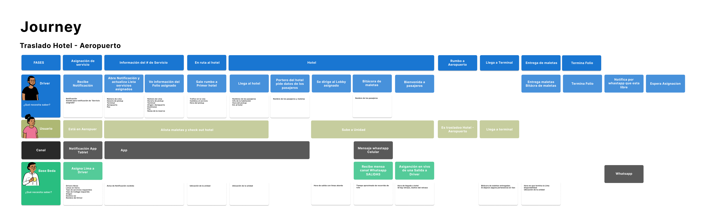
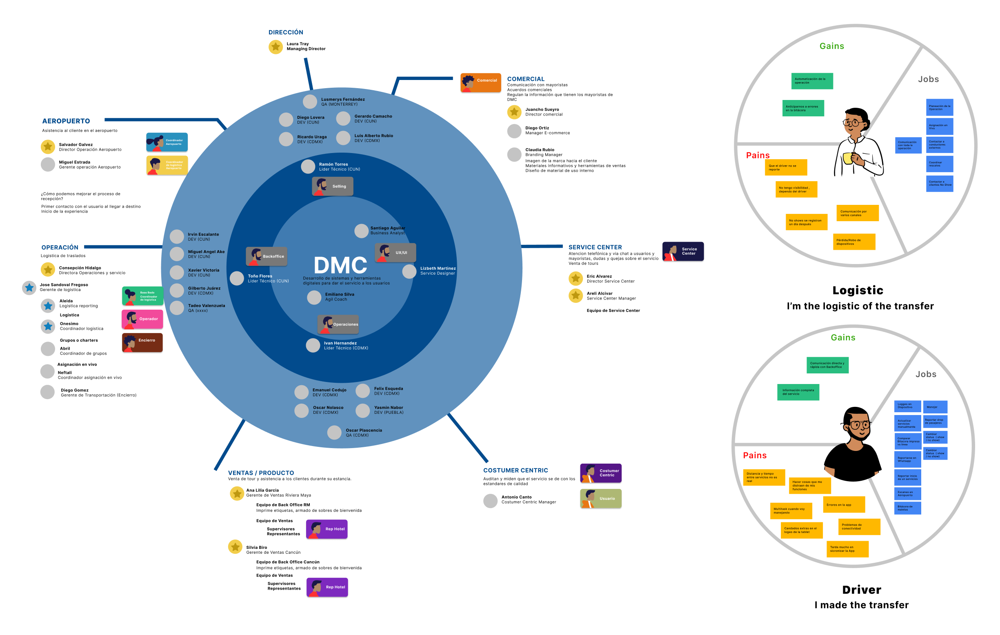
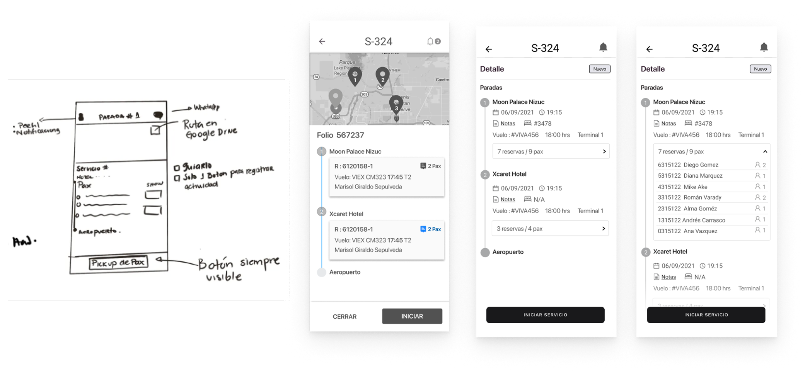
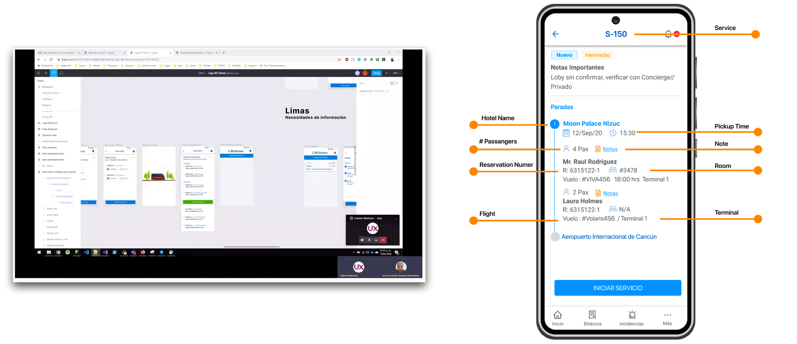
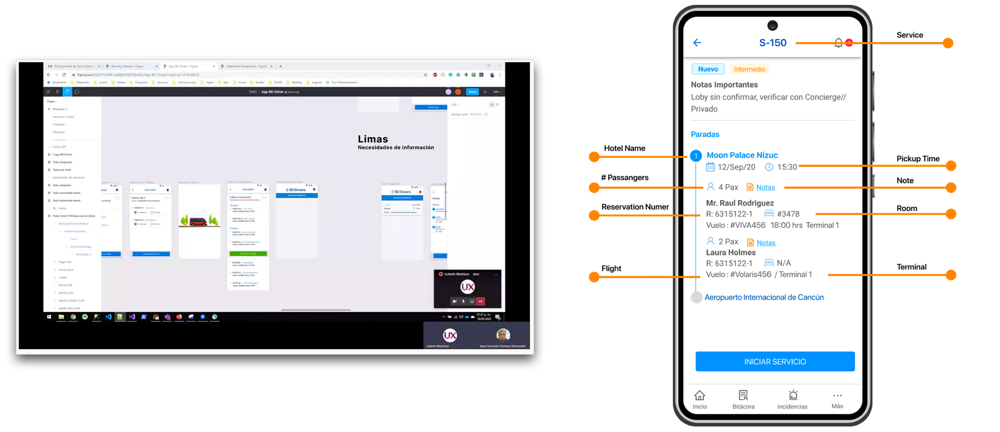
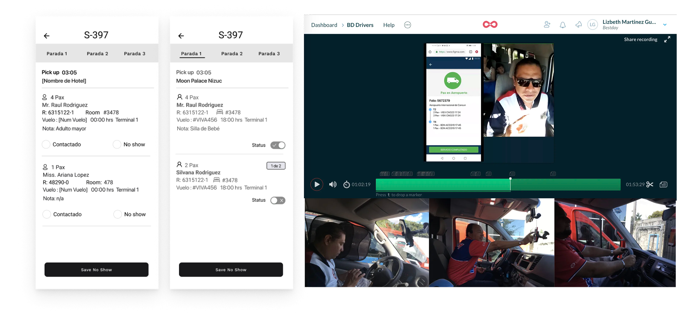
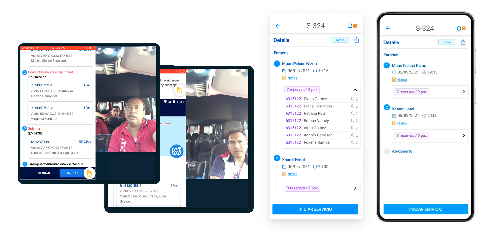
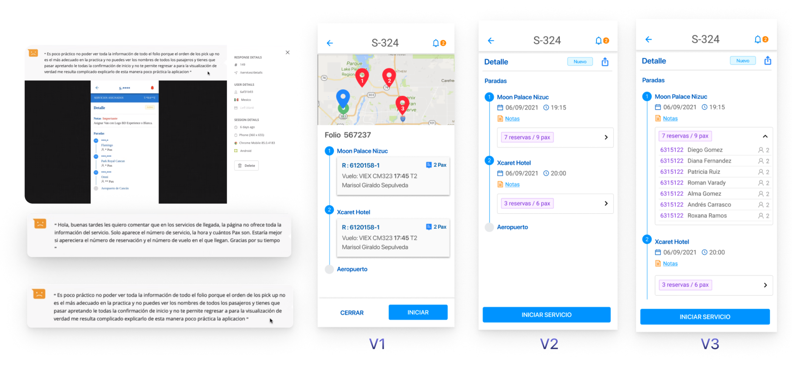
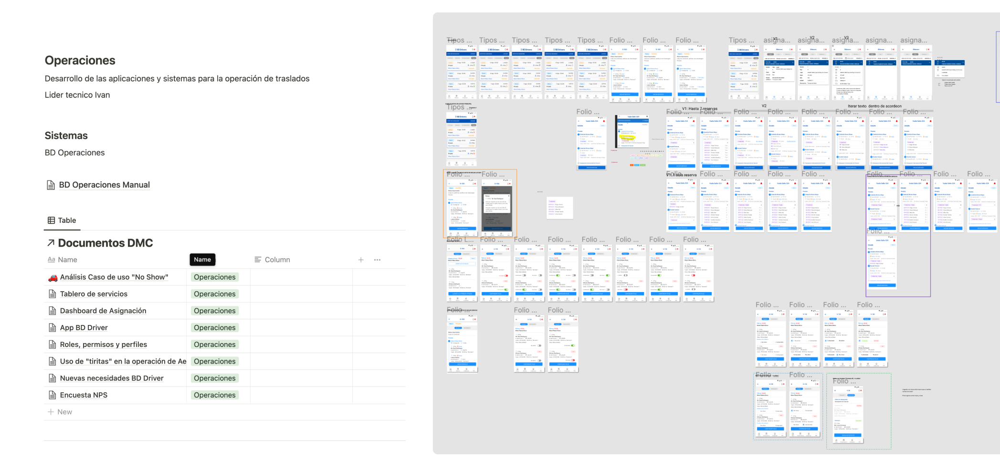

Streamlining Field Service Coordination Through UX-Driven Mobile Design.


As the sole UX Designer for a leading travel service provider in Latin America, I led the redesign of their driver app to solve major workflow and communication issues. Drivers were relying on outdated processes—paper forms, fragmented tools, and constant phone calls—which made real-time coordination nearly impossible and negatively impacted the travel experience.
The redesign led to stronger communication, reduced conflict, time savings, and ultimately, better service quality.
- Reduced unnecessary driver-logistics calls by 35%
- Service update times dropped by 97%
- Enhanced User Experience
- Operational costs were reduced
Listening Before Designing
When I joined the team, I noticed a recurring frustration among both office staff and drivers: the tools meant to support them were actually slowing them down.
Before jumping to solutions, I knew it was essential to get close to the people and the context. I needed to understand not only how the app was being used in the real world but also how it fit within the broader ecosystem of internal tools and workflows.
I immersed myself in the field—conducting interviews with logistics staff, shadowing airport coordinators, and riding along with drivers during their shifts. This ethnographic approach revealed that the existing app didn’t align with users’ real needs.
Drivers lacked real-time updates, and coordination relied heavily on fragmented tools like phone calls, paper forms, and messaging apps, creating inefficiencies that impacted both operations and the traveler experience.

Challenge
Drivers rarely used the app due to outdated features and missing information. This led to poor communication with the office team and increased phone calls and messages to coordinate daily operations.
From Insights to Solutions
From the ground research came five key insights that helped uncover the root of the problem.
üîß High Maintenance Costs
Relying on multiple devices and manual processes increased operational complexity and costs. The app had to be maintained across both tablets and smartphones, which added to the workload and technical upkeep.
üë• Lack of User-Centered Design
Drivers were not involved in the design process, leading to a product focused solely on business needs. As a result, the app failed to meet user expectations and did not support drivers' real-world workflows.
üìû High Volume of Calls
Improper app usage led to communication gaps, resulting in a high volume of calls and messages to confirm service updates. Taking calls while driving affected the service experience, introduced safety risks, and highlighted usability issues within the app.
üîÑ Process Misunderstandings
Departments operated in silos and lacked a clear understanding of how their roles impacted the full service cycle. This lack of alignment led to inefficiencies and inconsistent user experiences.
üîê Technical and Security Issues
Strict security settings on the tablets made it difficult for drivers to log actions quickly. They were often required to unlock the app multiple times, which disrupted workflows and caused delays in service logging.
With these insights in hand, I was able to propose informed, targeted solutions: consolidating the app into a single cross-platform web application, designing a real-time dashboard to give logistics teams visibility, and rebuilding the driver interface with their direct input. Having data grounded in fieldwork gave me the clarity to prioritize changes that would reduce operational friction, cut costs, and—most importantly—build a tool that people actually wanted to use.
Mapping the Chaos
To bring clarity to the chaos, I began by mapping out the entire transfer service journey—from the moment a ride was assigned to its final drop-off. My goal was to pinpoint exactly where miscommunications were happening and where the experience was breaking down for both drivers and staff.
To make the complexity of the service visible and easier to understand, I created a series of visual tools: a stakeholder map, journey map, empathy map, and a blueprint of the service.
These weren’t just artifacts—they were strategic tools that helped me understand who was involved, what they needed, and where the friction points were. They also helped the team align around a shared vision and identify opportunities for improvement in a simple, visual way.
To ensure alignment across departments, I led a collaborative workshop that brought together staff from logistics, operations, and development. We used the blueprint as a foundation to walk through the service from the user's perspective.
This workshop allowed us to break silos, encourage cross-functional collaboration, and lay the groundwork for a redesign that served everyone involved—especially the end users.

Redesigning the Right Way
Co-Creating the First Prototype
With a clear understanding of user needs and the support of the drivers, I built the first interactive prototype using Figma. Unlike the original version, this new design was co-created with the drivers in mind.
I focused on simplifying the interface, prioritizing only the most essential features, and structuring it around the drivers’ real workflows.
To reduce tech overhead, I proposed transitioning to a responsive web app—compatible with both Android and iOS—eliminating the need to maintain separate native applications.
 

Testing in the Real World
I conducted five usability tests with drivers in real scenarios before development began. These sessions helped identify usability issues early, and the feedback we gathered directly informed the next design iteration.
It was crucial for me to record and share the testing sessions in real time with the IT and business teams. This not only created empathy but also made the users’ frustrations and needs visible to everyone involved in the project, encouraging better cross-team collaboration.
 Iterating with Purpose
Guided by user feedback, we carried out two additional rounds of iteration to refine the app.
We reduced the number of screens by removing unnecessary information, minimized the number of taps to streamline task completion, and addressed major pain points like the double-security lock on tablets.
Each change was validated with users, ensuring we were continuously improving the experience based on real-world input. The result was a polished, user-centered proposal ready for development—designed not just for the business, but with the drivers at the heart of it.

Handoff with Confidence
This project went far beyond designing in Figma—it was a collaborative effort with developers from the start. I worked closely with the tech team to document each user story, tying every design decision to specific insights from our research. Each story included clear acceptance criteria, grounded in real user pain points or operational metrics we aimed to improve, such as reducing follow-up calls or simplifying task logging. This ensured we weren’t just building features—we were solving validated problems.
To ensure a smooth handoff, we organized working sessions to review and prioritize the task backlog together. By making the research findings accessible and transparent, every team member—from developers to stakeholders—understood the why behind each design. This alignment allowed us to move forward confidently, knowing the product improvements were rooted in real data and user context, not assumptions.

Outcome
The results of the redesign were both measurable and meaningful.
üåü Reduced unnecessary driver-logistics calls by 35%
Significantly improving operational efficiency.
üåü Service update times dropped by 97%
Service update times dropped by 97%, going from a 24-hour delay to just 4 minutes
üåü 4 key digital Features form paper to digital
Introduced four key digital features that fully replaced paper-based processes.
üåü Less Operational Cost
Operational costs were reduced by eliminating the need for dual devices—drivers could now use a single device thanks to the new cross-platform web app.
Beyond the numbers, the impact was felt across the organization. Stakeholders expressed the need for more collaborative sessions, drivers shared that this was the first time they felt truly heard, and developers gained a deeper understanding of user needs.
The redesign led to stronger communication, reduced conflict, time savings, and ultimately, better service quality. Most importantly, the solution empowered drivers with a tool built for their reality, while improving the passenger experience through more reliable and efficient service delivery.